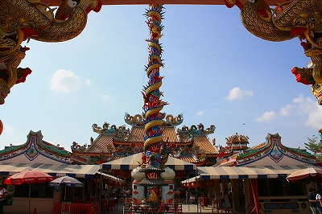

スパンブリに新しく巨大龍が出来たというので観にいった。
入り口でいきなり巨大龍がお出迎え！と思ったらコレは単なる入り口の門柱だった。落ち着け、俺。
で、その奥にありました！こりゃあデカい！
口から水を吐き、水煙を上げている巨大な龍だ。
高さ35メートル、長さ135メートル、まさに天空を泳いでいるかのようだ。
台座の水煙の部分は泰中の国交を記念して2008年の暮れにオープンしたばかりの博物館になっている。
その名もDescendants of Dragon Chinese Museum、龍の子孫である中国の博物館、という解釈でいいんですか？
華人の多いスパンブリならでは、の新名所である。
この場所はこの巨大龍の他、ラックムアンを祀った廟、八角七重の塔、などで構成されている。
勿論、一番目立つのは巨大龍なのだが、重要度としては龍の隣にあるラックムアンの方が遥かに高い。
ラックムアンは日本語で言うと「市の柱」。タイの大きな町（県庁所在地レベルの）には必ずある。
基本的に柱の形をしており、その街を支えているとされるタイ独特の信仰対象物だ。
文字通り市民の精神的支柱とでもいうべき存在なのだ。
ご覧の通り思いっきり中華風味。

各地のラックムアンを訪ねているわけではないが、大抵のラックムアンは金色のアスパラガスみたいな形をしていたと思う。
このような中国スタイル、というのは珍しいと思う。
それだけスパンブリには華人が多く住んでいるということか。
境内も思いっきり中華スタイル。どこの国にいるかわからないぞ。
ラックムアンの奥には廟が。石本頭公なる神さまを祀っているようだ。
勉強不足ゆえどんな神さまか知らないが、道教神の一種なのだろう。何か頑固そうな名前ですね。
参拝者によって見事に金箔コーティングされていた。
お人形もとばっちりを受けて若干ゴールド化しつつあります。目が金！怖っ！
廟の柱にはことごとく龍！
窓枠も龍！
壁にも龍！
てな訳で龍づくしの廟だった。
あ、↓八角七重の塔ね。

で、お待ちかねドラゴン探検である。
意外と高い入場料を払い、中に入ると大勢の人がロビーでたむろしていた。
この施設は、展示物を見学者が勝手に見ていくのではなく、何人かごとのグループにガイドが付くグループツアー形式のようだ。
基本的に案内はタイ語だが英語の音声ガイドレシーバーを貸してくれた。
で、どんな博物館なのか良く判らないまま入館しちゃったので貰ったパンフを見てみると…
中国の歴史を前史から現代までキッチリ説明しましょう、という壮大すぎる「ザ・中国史テーマパーク」だったのだ。
おっ、いよいよツアーが始まるぞ。
我々を中国の歴史世界にいざなってくれるのはこのお嬢さん。よろしくおねがいしますねー。
で、早速最初の部屋へ。まずは円形シアターで中国世界へのイントロダクション。
龍太郎君（仮名）と竜子ちゃん（仮名）が中国ってこんな凄い歴史があるんだよー、的な説明をしているみたい。
タイ語なので全然判らないじゃないか！あ、そっか音声ガイド、ヘッドホンヘッドホン。
慌ててたのでほぼ聞き逃しちゃった。あ、もう同じグループの人達は隣の部屋に行ってるじゃん、急げ急げ。
で、お次は神話時代のシーンをジオラマと人形仕立てで解説。
見学グループが部屋に入ると人形が動いたり派手な音が鳴ったり照明がビカビカ瞬いたりして神話世界を紹介するのだ。
結論としてこの博物館はほぼ、この電動ジオラマ形式で各時代を紹介しつつ中国の深遠なる歴史を皆さんに学んでいただこう、というアトラクションだった。
数少ないホンモノの展示↓

黄河の水、だって。ホント黄色いねえ…
この後、中国正史のコーナーに突入する。
王様が正面向いたり横向いたりして諸々説明をしていた。
指南車。
龍が天井で暴れたりといったサービスシーンも。
お姉さんの下にあるのは兵馬俑のミニチュア。
秦のコーナーには勿論万里の長城。
漢代。
お待ちかね三国志。諸葛孔明が七星壇で舞うシーン。
勿論赤壁のシーンはリキ入ってました。
少林寺とかはややヌルめ。
ええと、コレは何だったっけ…
北宋時代。ギロチンが妙に豪華なところが怖い…
南宋の武将、岳飛。報国精忠という文字をママに書いてもらっている有名なエピソード。
京劇タイムは賑やかな音楽に合わせて人形さんたちがクルクル踊ります。

そんなこんなで清代へと。
阿片の様子も克明に描写されてます。
で、ラストエンペラー。
の成人像。
チョットこの辺りは日本人としてはデリケートな部分なので激昂した中華系の人たちに「お前日本人だな！」とか吊るし上げられたらどうしよう…とかチョット心配したものの、それ以前に皆さん中国5000年分のボリューム感たっぷりのレクチャーにかなり飽き飽きしてるっぽくてどっちかというと「もうすぐ終わるぞ！」という感じになってました。
この辺で5000年の旅もお終い。長かった～。
実際には1時間ほどだったのだが、何せ内容が内容だけに感覚的には2時間以上居たような感じだった。
チャチャっと観ればいっか、的なノリで入ってみたものの、グループツアーゆえ途中で「じゃ、この辺で失礼！」といったリタイアも出来なかった。ので、もしココに行かれる予定の方がいらっしゃったら時間に余裕をもってくださいな。。
まあ、言ってみれば中国5000年の授業を1時間に凝縮して学習したようなもの。もうふらふらです。
右へ左へと蛇行しながら進んでいく中国の歴史はまさに龍の如し。
何でタイに来て中国史学んでんだろ…まあ、これも修行というか苦行ということで。
最後に建設プロセス関係の展示があって終了。で、最後に龍グッズが並ぶ土産屋を通ってやっと外に「開放」される。
スパンブリにおける華人の立ち位置を如実に物語る施設であった。
結構タイ人の団体さんとかが来てて、人気スポットだったみたい。
ウルトラ頭悪さ気なバス、凄く好きです。
次は地獄に行きますよ～
泰国珍寺修行 南へ
珍寺大道場 HOME